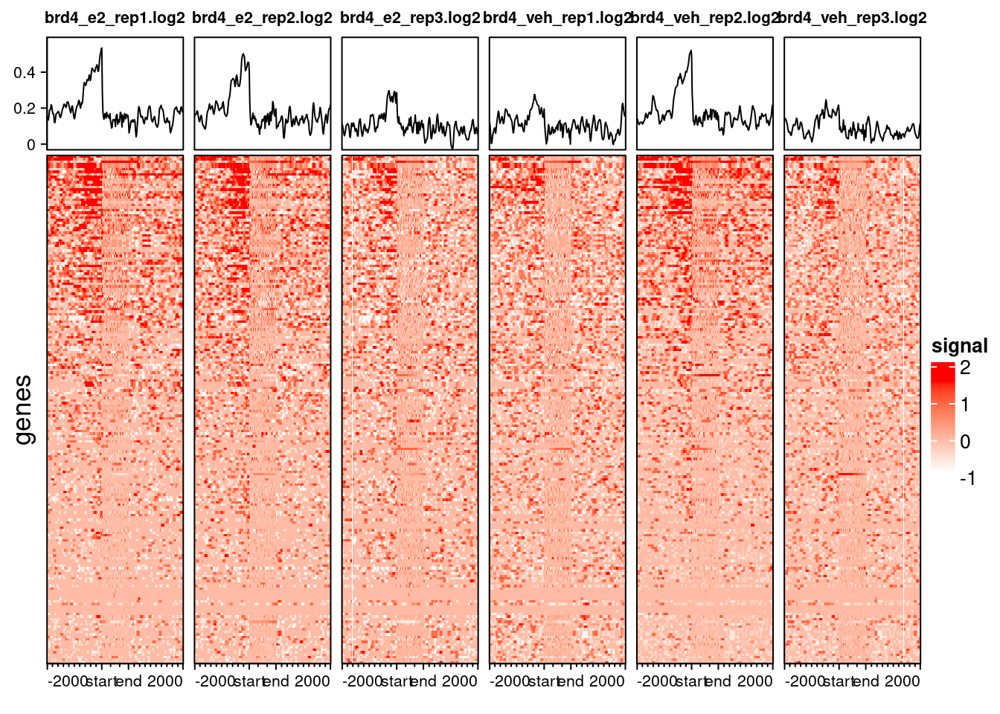
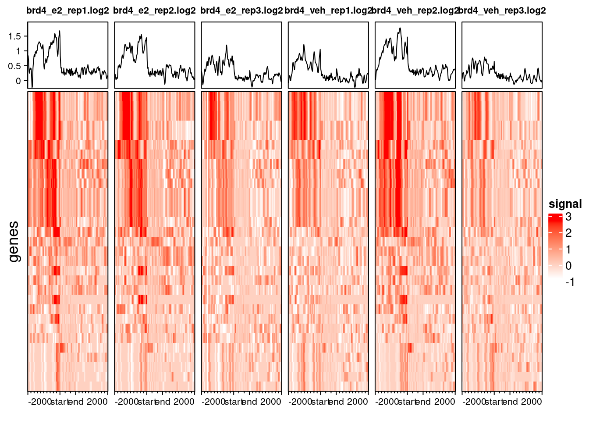

5 Profile heatmaps
- Generate binned count matrices for producing profile plots.
- Visualise peak profiles as a density plots and as a heatmap.
5.1 Profile heatmaps
Before we visualise our data as heatmaps, we need to generate a matrix of binned counts for every peak and around annotations of interest (usually genes). This is a computationally-intense step, so for “real” analysis be sure to run this on a high-performance workstation or cluster (and be ready to wait for a while).
The binned counts matrix can be calculated using the deeptools suite. There are a couple of steps involved:
- Scale the counts of each sample by the respective input controls. These are usually expressed as a ratio of counts on a log scale: log2(sample/input).
- Generate a matrix of binned (scaled) counts around known genes.
The first step is achieved using the bamCompare (part of deeptools). Here is how we would generate these counts for one of our samples:
bamCompare \
-b1 results/nf-chipseq/bwa/mergedLibrary/brd4_e2_rep1.mLb.clN.sorted.bam \
-b2 results/nf-chipseq/bwa/mergedLibrary/mcf7_input_e2.mLb.clN.sorted.bam \
-o results/deeptools/brd4_e2_rep1.log2.bigwig \
--binSize 20 \
--smoothLength 60 \
-p 8Here, we have:
-
-b1is the BAM file for our sample; -
-b2is the BAM file for our input control; -
-ois the output file (in bigwig format); -
--binSizeis the size of the bin (in bp) that we want to summarise the data by (default is 10). The larger this number, the “coarser” the output will be, but it will also run faster and produce smaller files. -
--smoothLengthwill smooth the signal by taking into account the signal of neighbouring regions. This is useful for visualisation. -
-pis the number of processors (CPUs) we want to use to run the analysis in parallel. As mentioned earlier, these are a computationally intensive steps, so using more processors can help speed things up.
This analysis would have to be done for every single sample, so you may want to use some programmatic tricks to automate things (see tip box below).
bamCompare
One way to run bamCompare across all our samples in an automated way is to use a “for loop” Below is some code to illustrate this.
We take advantage that our files are named consistently to generate our for loop. In the following example we loop through the E2-treated samples (you would have to write another similar loop for the vehicle samples, as they have a different input control).
for file in results/nf-chipseq/bwa/mergedLibrary/*_e2_*.bam
do
# get the prefix from the BAM filename to generate output file
prefix=$(basename $file .mLb.clN.sorted.bam)
# print a message to the screen to keep track of things
echo "bamCompare on ${file}"
# run bamCompare
bamCompare \
-b1 $file \
-b2 results/nf-chipseq/bwa/mergedLibrary/mcf7_input_e2.mLb.clN.sorted.bam \
-o results/deeptools/${prefix}.log2.bigwig \
--binSize 20 \
--smoothLength 60 \
-p 8
done
5.1.1 computeMatrix
The next step of our analysis is to create a matrix of binned counts for each peak and gene annotation. This is done using the computeMatrix tool from deeptools.
There are two “modes” in which this tool can compute these counts: reference-point and scale-regions. The difference between these is well illustrated in the documentation.

computeMatrix. Image source: deeptools documentation.When to use one or the other depends on the type of protein being assessed. For transcription factors, which typically bind to gene promoters, the reference-point mode probably makes sense, as it will show the signal around the TSS. For proteins with broader signals, or that cover gene bodies (like our H2Bub1), the scale-regions might make more sense instead.
Here is some the code we used to generate this matrix, using as input the scaled bigwig files from bamCompare:
computeMatrix scale-regions \
--regionsFileName resources/GRCh38.109.gtf.gz \
--scoreFileName results/deeptools/brd4_*.log2.bigwig \
--outFileName results/deeptools/brd4.log2.mat.gz \
--blackListFileName resources/ENCFF356LFX_exclusion_lists.bed.gz \
--upstream 2000 \
--downstream 2000 \
--skipZeros \
--binSize 20 \
-p 8Where:
-
--regionsFileNameis the name of the annotations we want to use to estimate the matrix of counts. Typically the GTF of gene annotations is used (but you could use a different annotation, e.g. for a small subset of genes of interest). -
--scoreFileNameis the name of the files we want to calculate the binned counts on. Notice how we use the*wildcard to match all the BRD4. -
--outFileNameis the name for the output file, which is automatically compressed using the ‘gzip’ algorithm (thus we save it with extension.gz). -
--blackListFileNameexcludes regions falling in our exclusions list from being processed. -
--skipZerosskips regions that have no counts. -
--upstreamand--downstreamis the number of bp upstream and downstream of the TSS that we want to summarise counts, respectively. -
--binSizeand-phave the same meaning as above forbamCompare.
This step takes quite a while to run, so we have already generated these files for you (available from preprocessed/deeptools/).
5.2 Profile plots
There are two main types of profile plots that we can do:
- Density plots showing the average signal of our peaks around our regions of interest (often genes).
- A heatmap showing the signal of individual peaks around those same regions.
Once we have our binned count matrix, generating these is relatively simple using two deeptools commands.
For profile density plots we can use:
plotProfile -m preprocessed/deeptools/brd4.chr21.mat.gz -out results/brd4_profile.pngAnd for heatmaps we can do:
plotHeatmap -m preprocessed/deeptools/brd4.chr21.mat.gz -out results/brd4_heatmap.pngThere are several other options available with both of these tools (look at their documentation: here and here), including the ability to cluster the peaks using K-means clustering. We will leave that as an optional exercise for the reader.
5.3 Profile heatmaps in R
Although deeptools makes generating these plots relatively simple, we can also produce similar analysis using dedicated R/Bioconductor packages. This has the advantage that it integrates well with our previous analysis in R.
First, we set things up by loading our packages:
# Packages ----
# load packages
library(rtracklayer) # for importing BED/GFF/etc.
library(plyranges) # for working with GenomicRanges
library(ChIPseeker) # to annotate peaks
library(profileplyr) # for profile heatmaps
library(ggplot2)
# change the default ggplot theme
theme_set(theme_classic(base_size = 14))If you haven’t run the previous analysis of peaks, you can also read these in from pre-processed files we provide:
# read consensus GRanges
brd4_consensus <- readRDS("preprocessed/r_objects/brd4_consensus_granges.rds")The matrix of binned counts can be imported into R using the Bioconductor/profileplyr package.
# Profile heatmaps ----
# import the pre-computed matrix from deeptools
brd4_prof <- import_deepToolsMat("preprocessed/deeptools/brd4.log2.chr21.mat.gz")
brd4_profclass: profileplyr
dim: 3138 250
metadata(0):
assays(6): brd4_e2_rep1.log2 brd4_e2_rep2.log2 ... brd4_veh_rep2.log2
brd4_veh_rep3.log2
rownames: NULL
rowData names(3): names score dpGroup
colnames: NULL
colData names(0):The type of object returned is called a profileplyr object, which is a modified version of a SummarizedExperiment object, often used to store RNA-seq counts. We won’t go into the details of this object here, but you can find detailed information on the package’s vignette.
The main things to consider for our purposes are:
- The peak intervals (ranges) over which the data are summarised is available through the
rowRanges()slot of the object. - The sample information is stored in the
sampleData()slot of the object. - We can subset the object using
[with the syntax as:object[ranges, bins, samples].
Here are some illustrative examples:
# ranges information
rowRanges(brd4_prof)GRanges object with 3138 ranges and 3 metadata columns:
seqnames ranges strand | names score
<Rle> <IRanges> <Rle> | <character> <character>
[1] 21 8238858-8239092 + | ENST00000652328 .
[2] 21 8420674-8421003 + | ENST00000652246 .
[3] 21 10576291-10576587 + | ENST00000616920 .
[4] 21 10028360-10029855 - | ENST00000624662 .
[5] 21 13544209-13545185 - | ENST00000431829 .
... ... ... ... . ... ...
[3134] 21 25934340-25935178 + | ENST00000596669 .
[3135] 21 25941601-25952614 + | ENST00000667606 .
[3136] 21 25943043-25943145 - | ENST00000516163 .
[3137] 21 26158090-26175824 + | ENST00000455275 .
[3138] 21 26190706-26190813 + | ENST00000384075 .
dpGroup
<factor>
[1] genes
[2] genes
[3] genes
[4] genes
[5] genes
... ...
[3134] genes
[3135] genes
[3136] genes
[3137] genes
[3138] genes
-------
seqinfo: 1 sequence from an unspecified genome; no seqlengths# sample information
sampleData(brd4_prof)DataFrame with 6 rows and 20 columns
upstream downstream body bin.size unscaled.5.prime
<numeric> <numeric> <numeric> <numeric> <numeric>
brd4_e2_rep1.log2 2000 2000 1000 20 0
brd4_e2_rep2.log2 2000 2000 1000 20 0
brd4_e2_rep3.log2 2000 2000 1000 20 0
brd4_veh_rep1.log2 2000 2000 1000 20 0
brd4_veh_rep2.log2 2000 2000 1000 20 0
brd4_veh_rep3.log2 2000 2000 1000 20 0
unscaled.3.prime sample_labels verbose bin.avg.type
<numeric> <character> <logical> <character>
brd4_e2_rep1.log2 0 brd4_e2_rep1.log2 FALSE mean
brd4_e2_rep2.log2 0 brd4_e2_rep2.log2 FALSE mean
brd4_e2_rep3.log2 0 brd4_e2_rep3.log2 FALSE mean
brd4_veh_rep1.log2 0 brd4_veh_rep1.log2 FALSE mean
brd4_veh_rep2.log2 0 brd4_veh_rep2.log2 FALSE mean
brd4_veh_rep3.log2 0 brd4_veh_rep3.log2 FALSE mean
missing.data.as.zero scale skip.zeros nan.after.end
<logical> <numeric> <logical> <logical>
brd4_e2_rep1.log2 FALSE 1 TRUE FALSE
brd4_e2_rep2.log2 FALSE 1 TRUE FALSE
brd4_e2_rep3.log2 FALSE 1 TRUE FALSE
brd4_veh_rep1.log2 FALSE 1 TRUE FALSE
brd4_veh_rep2.log2 FALSE 1 TRUE FALSE
brd4_veh_rep3.log2 FALSE 1 TRUE FALSE
proc.number sort.regions sort.using ref.point min.threshold
<numeric> <character> <character> <list> <list>
brd4_e2_rep1.log2 10 keep mean
brd4_e2_rep2.log2 10 keep mean
brd4_e2_rep3.log2 10 keep mean
brd4_veh_rep1.log2 10 keep mean
brd4_veh_rep2.log2 10 keep mean
brd4_veh_rep3.log2 10 keep mean
max.threshold generation.method
<list> <character>
brd4_e2_rep1.log2 deepTools
brd4_e2_rep2.log2 deepTools
brd4_e2_rep3.log2 deepTools
brd4_veh_rep1.log2 deepTools
brd4_veh_rep2.log2 deepTools
brd4_veh_rep3.log2 deepTools# subset the object for:
# first 10 peaks
# first 5 bins
# first 3 samples
brd4_prof[1:10, 1:5, 1:3]class: profileplyr
dim: 10 5
metadata(0):
assays(3): brd4_e2_rep1.log2 brd4_e2_rep2.log2 brd4_e2_rep3.log2
rownames: NULL
rowData names(3): names score dpGroup
colnames: NULL
colData names(0):One of the main functions provided in this package is the ability to produce profile heatmaps. These heatmaps can be quite heavy to render graphically, so it’s usually a good idea to subset our ranges.
In the following example, we sample a few random intervals to get an idea of occupancy for our BRD4 protein around genes:
# sample 200 peaks randomly
random_peaks <- sample(1:nrow(brd4_prof), 200)
# Plot random peaks to give an idea of occupancy
generateEnrichedHeatmap(brd4_prof[random_peaks, ],
include_group_annotation = FALSE)
We can see that BRD4 mostly occupies gene promoters. This result does not come as a complete surprise, as we had already seen this in previous analysis.
For heatmaps with thousands of peaks, it’s best to save them as PNG, as the plotting device on RStudio can stuggle to render them. Here is an example for all Chr21 peaks we loaded in:
We can subset our profile object to include only the peaks that overlap with another set of peaks of our interest. For example, we could investigate if the profiles look very different for the set of genes that are differentially expressed in siBRD4 lines.
# read DEGs from Nagarajan 2017
degs <- read.csv("resources/degs_nagarajan2017.csv")
# subset annotated intervals
brd4_consensus_degs <- brd4_consensus |>
filter(geneId %in% degs$ensembl_gene_id)
# subset our profile object to include only the filtered intervals
brd4_prof_degs <- brd4_prof |>
subsetByOverlaps(brd4_consensus_degs)
# visualise them
generateEnrichedHeatmap(brd4_prof_degs, include_group_annotation = FALSE)